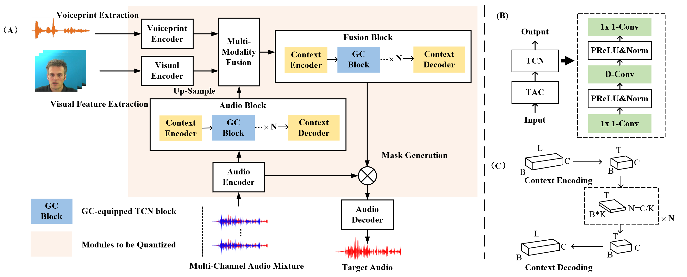
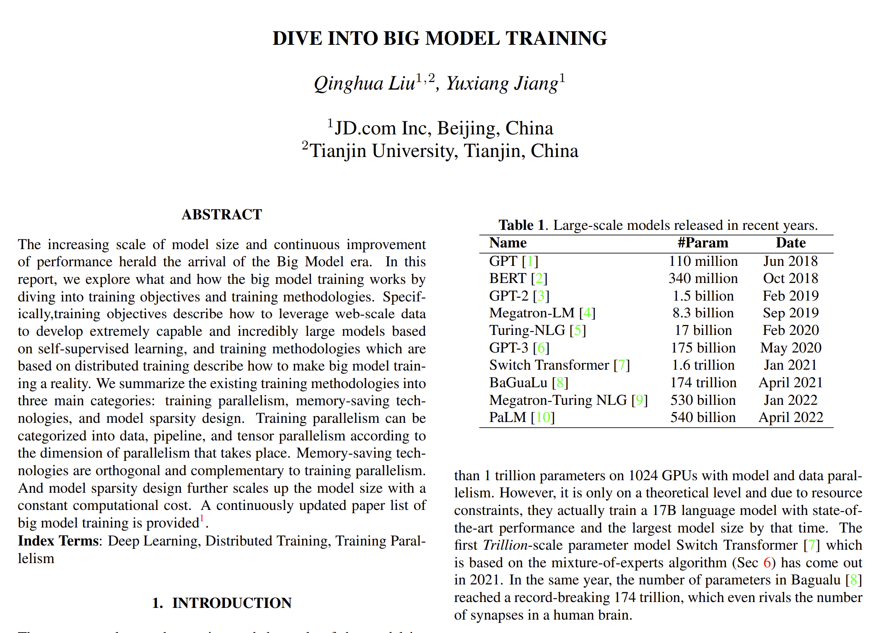

Qinghua Liu
! Website currently under development
EECS Student

Research Assistant at CUHK(SZ)
• Location: Shenzhen, China
• Email: liuqinghua@cuhk.edu.cn
• GitHub: qhliu26
• Twitter: @qhliu26
• Blog: Zhihu
Education
|
Sept. 2018 - Jun. 2022 B.Eng. in Electronic Information Engineering Qiushi Honors College, Tianjin University (TJU), China |
Publication
|  |
LiMuSE: Lightweight Multi-modal Speaker Extraction Qinghua Liu, Yating Huang, Yunzhe Hao, Jiaming Xu, Bo Xu [Code] [Dataset] ArXiv, 2022 |
|  |
Dive into Big Model Training Qinghua Liu, Yuxiang Jiang [Paperlist] ArXiv, 2022 |
Experience
|
The Chinese University of Hong Kong, Shenzhen Jul. 2022 - Present Research Assistant (Advisor: Prof. Haizhou Li) Research | |
|
Institute of Automation, Chinese Academy of Sciences Jun. 2021 - Jan. 2022 Research Intern (Advisor: Prof. Jiaming Xu) Lightweight multi-modal auditory frontend model computation and optimization |
Work Experience
|
JDT, JD.com Inc Mar. 2022 - Jul. 2022 Algorithm Engineer Intern (Supervisor: Cong Guo) Engineering | |
|
NXP Semiconductors Jul. 2019 - May 2021 System Engineer Intern (Supervisor: River Shao) Engineering |
Academic Awards
- Meritorious Winner in Mathematical Contest in Modeling | 2021
- 1st prize in Contemporary Undergraduate Mathematical Contest in Modeling at Tianjin region | 2020
- 2nd prize in National Intelligent Vehicle Contest at North China Region | 2020
- 1st prize in Mathematics Competition of Chinese College Students at Tianjin region | 2019
Extra Curricular Activaties
|
Tianjin University Student Ambassador Association Dec. 2020 - Feb. 2022 President Attend international exchange events and organize foreign affairs reception |